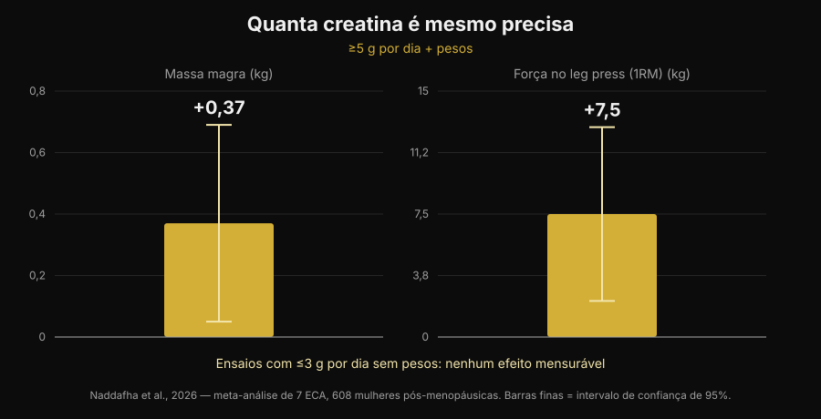
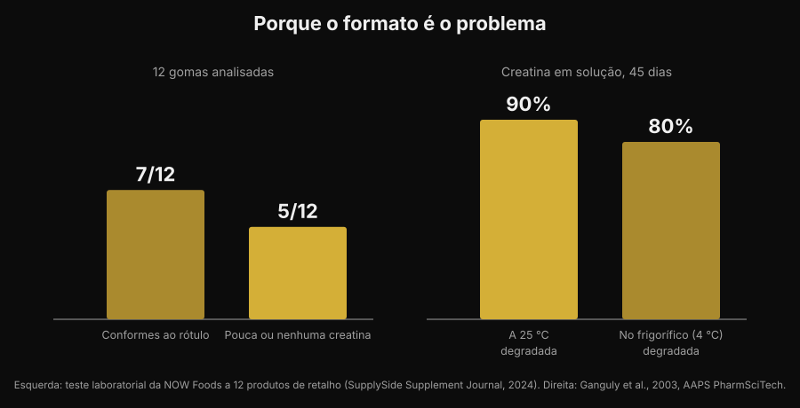

Gomas de creatina: funcionam como o pó?
Mastigar duas gomas em vez de dissolver um pó que fica no fundo do copo: é uma promessa cómoda, e as pesquisas por "creatine gummies" cresceram 279%. Mas a pergunta a sério não é se a creatina funciona — nisso a literatura está fechada há trinta anos — e sim se dentro daquelas gomas está mesmo a creatina que o rótulo anuncia. Sobre isto há números, e não são tranquilizadores.

Em resumo
- Existe um estudo sobre gomas, e é positivo. Dez semanas, 5 g por dia de creatina monohidratada em goma: em 32 atletas de voleibol de praia o salto vertical e a mudança de direção melhoraram em relação ao controlo.
- Mas esse estudo usou 5 g a sério. A meta-análise mais recente encontra +0,37 kg de massa magra e +7,5 kg de leg press com ≥5 g por dia em conjunto com os pesos, e nenhum efeito mensurável nos ensaios com ≤3 g por dia sem treino.
- Muitas gomas não contêm o que declaram. Num teste de laboratório a 12 produtos à venda, 5 tinham pouca ou nenhuma creatina — e todos os 5 continham creatinina.
- A creatinina não é perigosa, é inútil. É o produto de degradação da creatina: encontrá-la no frasco quer dizer que a creatina se foi antes de a comprares.
- A química explica porquê. A creatina em pó seco é estável; em solução não. Em água à temperatura ambiente 90% degrada-se em 45 dias.
Porque é que as gomas estão em todo o lado
O motivo não é científico, é logístico. O pó de creatina tem três defeitos práticos: tem de ser dosado, tem de dissolver, e se a água está fria fica granuloso no fundo. A goma resolve os três problemas de uma vez, vai no saco de treino e parece um rebuçado em vez de um suplemento. É o mesmo mecanismo que empurrou a vitamina D e os ómega-3 para o formato mastigável.
O resultado vê-se nas pesquisas: "creatine gummies" é hoje uma consulta de cerca de 165.000 pesquisas por mês, com um crescimento de 279%, e os primeiros lugares do Google são quase todos rankings de sites que vendem o produto. Quase nenhuma dessas páginas mostra os dois dados que contam: quanta creatina é necessária, e quanta existe de facto no produto.
A boa notícia: há um estudo sobre gomas
Até há pouco tempo, quem perguntava "funcionam?" recebia uma resposta por analogia: lá dentro há creatina monohidratada, a creatina monohidratada funciona, logo funcionam. Agora existe um estudo que testou exatamente este formato.
Trinta e duas atletas de voleibol de praia, universitárias e profissionais, foram distribuídas por creatina monohidratada em gomas a 5 g por dia ou por um grupo de controlo, durante dez semanas. O grupo da creatina melhorou o salto com contramovimento (p < 0,001) e a velocidade nas mudanças de direção (p = 0,009), enquanto o controlo não melhorou ou piorou; apareceram também diferenças favoráveis na massa gorda e na percentagem de gordura. Nenhuma diferença, em contrapartida, na massa magra, na massa muscular esquelética e no tempo de reação (Pereira et al., 2026).
É um resultado coerente com toda a literatura sobre creatina em pó, e diz uma coisa simples: a goma não estraga a molécula. Se a creatina está lá e na quantidade certa, o veículo não é o problema. O que empurra tudo para as duas condições: se está lá, e se é suficiente.
A dose é o jogo todo
O número a guardar é 5 g por dia. É a dose de manutenção indicada pela posição oficial da International Society of Sports Nutrition, e é exatamente a usada no estudo sobre as gomas. A fase de carga (cerca de 0,3 g por kg de peso por dia durante 5-7 dias) enche os depósitos mais depressa, mas não é obrigatória: chegas ao mesmo ponto com 3-5 g por dia em algumas semanas (Kreider et al., 2017).
Abaixo desse limiar as coisas mudam. Uma revisão sistemática com meta-análise de sete ensaios randomizados e 608 mulheres na pós-menopausa encontrou benefícios claros quando a creatina passava os 5 g por dia e era combinada com treino de resistência: massa magra +0,37 kg (IC 95% de +0,05 a +0,69) e leg press +7,5 kg (IC 95% de +2,2 a +12,8). Nos ensaios que usavam ≤3 g por dia sem treino, nenhum efeito mensurável (Naddafha et al., 2026).

A mesma ordem de grandeza volta num ensaio triplamente cego com vinte adultos veganos: quatro semanas a 0,1 g por kg por dia — cerca de 7 g para uma pessoa de 70 kg — aumentaram a massa muscular esquelética em 0,3 kg e melhoraram o salto, sem alterações nos marcadores renais (López-Moreno et al., 2026).
Agora a conta prática, que é a razão pela qual as gomas merecem atenção. Eis quantas gomas são precisas por dia para chegar a 5 g, em função do que declara cada goma:
| Creatina declarada por goma | Gomas por dia para 5 g |
|---|---|
| 0,5 g | 10 |
| 0,75 g | 7 |
| 1 g | 5 |
| 1,25 g | 4 |
| 1,5 g | 4 (3,3 arredondado) |
| 2 g | 3 (2,5 arredondado) |
Cálculo Nurvan: 5 ÷ gramas declarados por goma, arredondado para cima. Os gramas por goma leem-se no rótulo do produto que tens na mão.
O problema não é o número em si, é que a porção sugerida na frente da embalagem quase nunca dá 5 g. Se um produto recomenda "2 gomas por dia" e cada goma declara 1 g, estás a tomar 2 g: a faixa que na meta-análise não produziu efeitos mensuráveis.
O problema a sério: o que está lá dentro
Chegamos à parte que os rankings de afiliados não contam. Um laboratório industrial comprou 12 gomas de creatina na Amazon e nos sites dos fabricantes e analisou-as. Sete produtos cumpriam a declaração do rótulo, alguns com margens generosas. Os outros cinco tinham pouca ou nenhuma creatina. E em todos os cinco foi encontrada creatinina, em quantidades de pequenas a relevantes (teste NOW Foods, relatado pelo SupplySide Supplement Journal, 2024).

A creatinina é o produto final da degradação da creatina. Não é um veneno — o teu corpo produz e elimina creatinina todos os dias — mas não tem nenhuma atividade ergogénica. Encontrá-la num suplemento quer dizer uma coisa só: aquela creatina degradou-se antes de te chegar à boca, e estás a pagar um doce.
Porque é que acontece justamente nas gomas? Por um motivo químico, não comercial. A creatina monohidratada em pó seco é muito estável; em solução não. Um estudo de estabilidade dissolveu formulações de creatina em água a pH 6,2 e mediu o teor durante 45 dias: à temperatura ambiente degradou-se 90% da creatina, no frigorífico 80% (Ganguly et al., 2003). Uma goma é um gel que nasce quente, contém água e é muitas vezes acidificado para o sabor, e depois fica meses na prateleira à temperatura ambiente: são exatamente as condições que aceleram a conversão. Não quer dizer que todas as gomas sejam inúteis — sete em doze estavam bem — mas que o formato é por natureza mais frágil do que o frasco de pó, e que sem uma análise de laboratório não tens como saber em que metade caíste.
O que a investigação diz de facto
| Afirmação comum | Veredicto | Fonte |
|---|---|---|
| "As gomas não funcionam, a creatina estraga-se" | A precisar: num estudo funcionaram | Pereira et al., 2026 |
| "Basta tomar as gomas indicadas no rótulo" | Desmentido: o que conta é chegar a 5 g | Naddafha et al., 2026; Kreider et al., 2017 |
| "Se diz creatina, lá dentro há creatina" | Desmentido: 5 produtos de 12 tinham pouca ou nenhuma | Teste NOW Foods, 2024 |
| "A creatinina das gomas faz mal aos rins" | Desmentido: é inerte, o problema é a dose que falta | Kreider et al., 2017; López-Moreno et al., 2026 |
| "A fase de carga é obrigatória" | A precisar: acelera, não é obrigatória | Kreider et al., 2017 |
| "As formas mais solúveis são mais eficazes" | Não demonstrado no ser humano | Alraddadi et al., 2018 |
Vale a pena parar na última linha, porque é o argumento que acompanha quase todas as formas alternativas. É verdade que o cloridrato de creatina é mais solúvel do que o monohidrato, e um estudo de farmacocinética no rato, com modelação, estimou uma biodisponibilidade oral mais alta para a forma cloridrato do que para o monohidrato (Alraddadi et al., 2018). Mas é um modelo animal: nenhum ensaio em humanos mostrou que isso se traduza em mais força ou mais massa, e o monohidrato continua a ser a forma em que assenta praticamente toda a literatura, incluindo a da segurança a longo prazo (Kerksick et al., 2026). O mesmo princípio vale para a goma: é um veículo, não uma vantagem.
Como aplicar
- Começa pelos gramas, não pelos doces. Lê quantos gramas de creatina monohidratada declara cada goma e faz a conta para chegar a 5 g por dia. Se a embalagem não declara por unidade mas só por "porção", já é um sinal.
- Desconfia dos produtos que não dizem "monohidratada". É a forma usada nos estudos, gomas incluídas. As designações genéricas ou as formas "proprietárias" não têm a mesma base de evidência.
- Procura uma certificação de terceiros. Informed Sport, NSF Certified for Sport e equivalentes mandam analisar os lotes. Nas gomas conta mais do que no pó, precisamente porque o formato é mais instável.
- Faz a conta do custo por grama. Divide o preço pelos gramas totais de creatina da embalagem, não pelo número de gomas. A comparação com o frasco de pó costuma acabar aí.
- Olha também para os açúcares. Cinco gomas por dia são cinco doces por dia: vê a linha dos açúcares no rótulo nutricional e mete-a na conta do dia.
- A hora conta menos do que a constância. O que enche os depósitos é tomá-la todos os dias, não acertar na janela certa: escrevi sobre isso em detalhe no artigo sobre quando tomar os suplementos.
Experimenta a Nurvan — a suplementação registada ao lado das cargas
Na Nurvan registas o que tomas e quando na secção de suplementação, e vês isso ao lado do histórico de cargas, repetições e RIR dos teus treinos. Assim, se mudares de formato ou de marca de creatina, podes olhar para o que aconteceu aos números no ginásio nas semanas seguintes em vez de confiar numa sensação. No mesmo perfil encontras também as análises que carregaste.
Perguntas frequentes
As gomas de creatina funcionam mesmo?
Podem funcionar, com duas condições. No estudo disponível, dez semanas a 5 g por dia em forma de goma melhoraram o salto vertical e as mudanças de direção em atletas de voleibol de praia (Pereira et al., 2026). As condições são que o produto contenha de facto a creatina declarada e que chegues a cerca de 5 g por dia.
Quantas gomas de creatina devo tomar por dia?
Depende de quantos gramas cada uma declara: o objetivo é cerca de 5 g por dia de creatina monohidratada. Com 1 g por goma são 5 gomas, com 0,5 g são 10. A "porção recomendada" impressa na embalagem fica muitas vezes abaixo dos 5 g.
A creatinina encontrada em algumas gomas é perigosa?
Não. A creatinina é o produto de degradação da creatina e o corpo produz e elimina creatinina normalmente; nos estudos a creatina não alterou os marcadores renais (Kreider et al., 2017; López-Moreno et al., 2026). O problema não é a toxicidade, é a eficácia: onde há creatinina, falta creatina. Se tens valores de análises fora do intervalo ou uma doença renal conhecida, o que deves fazer é falar com o teu médico, não escolher um suplemento sozinho.
Melhor gomas ou pó?
Na molécula não há diferença demonstrada. O pó tem três vantagens concretas: é estável durante muito tempo, custa bastante menos por grama e deixa-te dosear os 5 g exatos. A goma só ganha na comodidade. Sobre como se posicionam a creatina e outros suplementos na relação evidência/preço, fiz uma tier list dos suplementos para a força.
Leia também
- Tier list suplementos força: o que diz a investigação — onde está a creatina em relação a tudo o resto, com a evidência na mão.
- A creatina faz cair o cabelo? — a outra pergunta mais procurada sobre creatina, com o estudo que fez nascer a dúvida.
- Quando tomar os suplementos: a hora conta? — porque a constância pesa mais do que o momento da toma.
Fontes
- Pereira F, Forbes SC, Romano V, Christopher P, Santana JC, Antonio J, 2026. Effects of Creatine Monohydrate Gummies on Performance and Body Composition in Female Beach Volleyball Athletes. Journal of Functional Morphology and Kinesiology 11(1):105. PMID 41900512. DOI
- Naddafha S, Antonio J, Kreider RB, Stout JR, 2026. Creatine monohydrate for lean mass, strength, and bone density in postmenopausal women: a systematic review and meta-analysis. Journal of the International Society of Sports Nutrition 23(1):2668435. PMID 42141930. DOI
- Kreider RB, Kalman DS, Antonio J, Ziegenfuss TN, Wildman R, Collins R, Candow DG, Kleiner SM, Almada AL, Lopez HL, 2017. International Society of Sports Nutrition position stand: safety and efficacy of creatine supplementation in exercise, sport, and medicine. Journal of the International Society of Sports Nutrition 14:18. PMID 28615996. DOI
- Kerksick C, Gonzalez D, Stout J, Forbes S, Candow D, Ziegenfuss T, Marshall R, Schwesig R, Kreider R, 2026. The emerging and evolving evidence supporting creatine as an ergogenic aid: history and applications. Journal of the International Society of Sports Nutrition 23(1):2646627. PMID 41870601. DOI
- López-Moreno M, Muñoz A, Aguilar-Navarro M, Gutiérrez-Hellín J, Franco-Andrés A, López-López P, Crespo-Cañizares A, Marrero-Fernández P, Forbes SC, 2026. Does creatine supplementation improve strength and power in physically active individuals on a vegan diet? A randomized, triple-blind, placebo-controlled trial. European Journal of Applied Physiology 126(10):5521-5532. PMID 42390589. DOI
- Ganguly S, Jayappa S, Dash AK, 2003. Evaluation of the stability of creatine in solution prepared from effervescent creatine formulations. AAPS PharmSciTech 4(2):E25. PMID 12916907. DOI
- Alraddadi EA, Lillico R, Vennerstrom JL, Lakowski TM, Miller DW, 2018. Absolute Oral Bioavailability of Creatine Monohydrate in Rats: Debunking a Myth. Pharmaceutics 10(1):31. PMID 29518030. DOI
Referências bibliográficas recuperadas através da PubMed. Dado de laboratório sobre as 12 gomas: teste NOW Foods relatado pelo SupplySide Supplement Journal, 2024 — artigo. Tema escolhido com a pesquisa de tendências de 5 de novembro de 2026: "creatine gummies" está entre as consultas de maior crescimento no setor dos suplementos e as páginas que a ocupam são quase todas de quem vende o produto.
Giammaria Loi é o fundador da Nurvan. Treina com pesos desde 2012, trabalha como personal trainer e coach certificado FIPE desde 2013 e compete em powerlifting a nível nacional desde 2018. Cada artigo que assina parte dos estudos científicos e chega ao que funciona de verdade no ginásio.
Nota: conteúdo informativo, não substitui a opinião de um médico ou profissional de saúde.